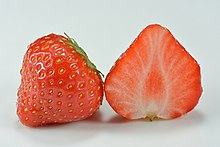
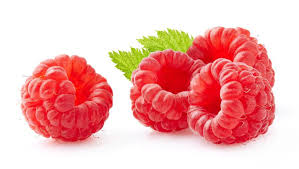

Truskawka
Truskawki najbardziej lubią miejsca nasłonecznione. Gleba powinna być piaszczysta i przepuszczalna o odczynie lekko kwaśnym. Sadzonki truskawek najlepiej sadzić na początku lipca, w ten sposób będą dobrze plonowały w przyszłych latach. W tym samym miejscu nie uprawia się truskawek przez więcej niż cztery lata, ponieważ najlepiej owocują przez drugi i trzeci rok. W celu ochrony przed chwastami warto wyłożyć ziemię agrowłókniną, ponieważ truskawki są wrażliwe na spulchnianie ziemi w ich pobliżu. Należy nawozić roślinę nawozami mineralnymi i pamiętać o regularnym podlewaniu.
|  |
|---|
Malina
Malinę można sadzić późną jesienią lub wczesną wiosną na glebach żyznych o pH 6,5. Gleba powinna być sucha i piaszczysta, bogata w próchnicę. Należy zapewnić jej słoneczne stanowisko, osłonięte od wiatru. Sadzonki warto podpierać. Warto nie zapominać o nawożeniu rośliny środkami mineralnymi, zawierającymi fosfor i potas. Maliny należy regularnie podlewać, o czym trzeba pamiętać w szczególności w czasie suszy.
|  |
|---|